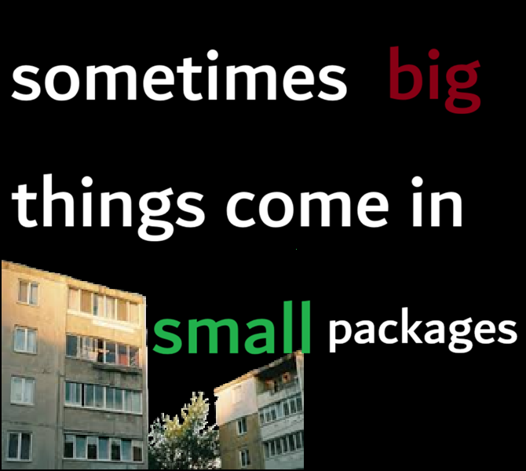

About Us
Silver Guda was created in a simple, loving household by three friends — Mindia, Merabi, and Giorgi. What started as a shared idea at home quickly turned into a mission: make food that’s reliable, affordable, and ready in any situation.
We weren’t trying to build something fancy. We wanted something real — food you can trust when there’s no time, no fire, or no comfort. That’s how Silver Guda was born: an MRE that tastes good even when cold, stays sealed and durable, and works wherever life takes you.
From our home kitchen to real-world use, Silver Guda grew fast. In our first year alone, we sold over 25,000 units, reaching people who needed dependable food without a high price tag. Today, Silver Guda is proud to be one of the most budget-friendly MRE options in Sakartvelo, trusted by everyday people who value simplicity and readiness.
Silver Guda isn’t just a product — it’s proof that big ideas can come from small places.
